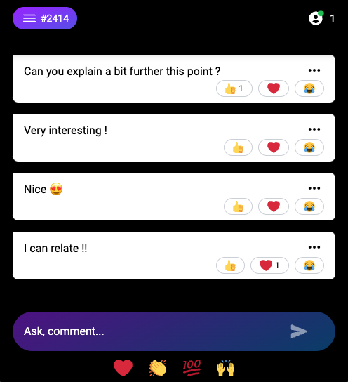
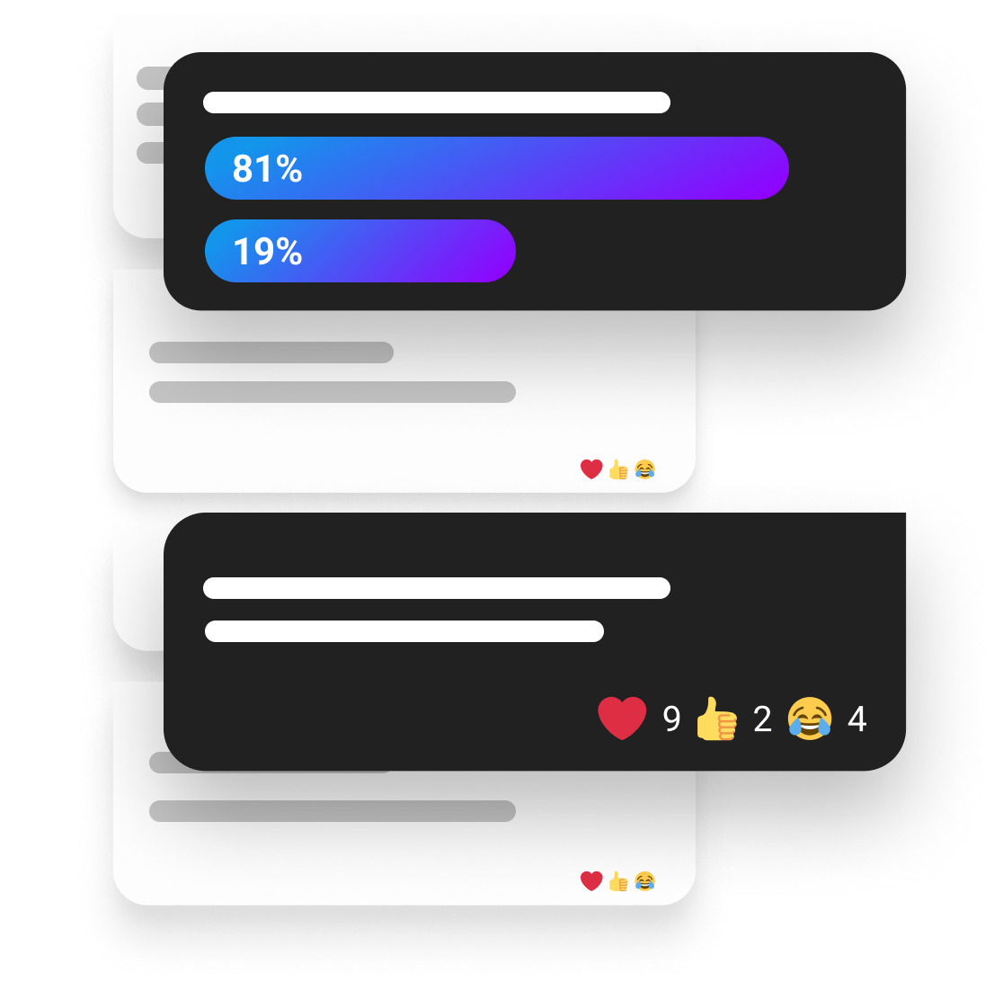
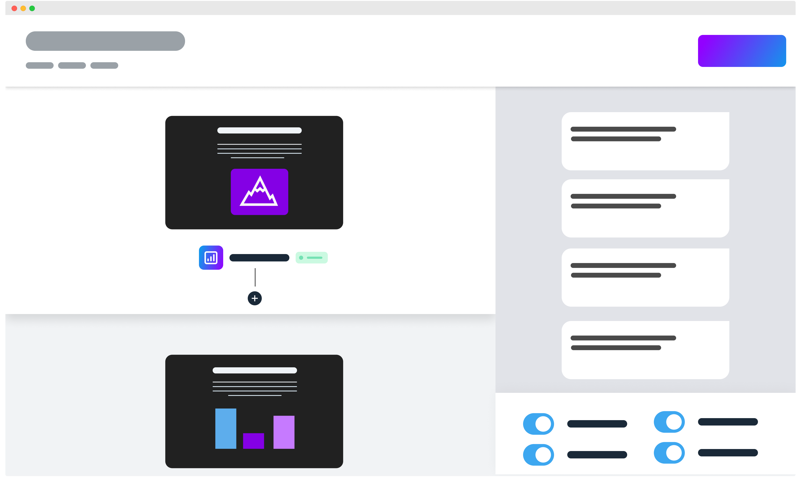

View Source Features
The main goal of Claper is to provide a simple and easy to use integrate feedback during your presentations.
We don't want to add a lot of features but instead focusing on the core features that are needed to provide a good feedback experience.
questions-and-answers
Questions and Answers
Users can send instant message during the presentation and interact to others messages with emoji reactions.

polls
Polls
You can add polls during your presentation. Users can vote to the poll and see the results in real time.
When you create a new presentation, click on Present/Customize, select the slide where you want to add poll and click Add interaction.
During your presentation, enable Active poll results on the dashboard to see the poll results in real time.
You can choose between single choice and multiple choice polls.

forms
Forms
You can also add forms during your presentation. Users can fill the form and you can see all submissions in real time.
When you create a new presentation, click on Present/Customize, select the slide where you want to add form and click Add interaction.
After your presentation, you can export all the submissions in CSV format.
moderation-tools
Moderation tools
You can moderate the messages during your presentation. You can delete messages or ban users from the dashboard.
Banning the user will prevent him to send messages during the presentation and is based on a token that is stored in the browser. If the user clear his cookies, he will be able to send messages again.

facilitators
Facilitators
You can add users as facilitators to your presentation. Facilitators can moderate the messages from the dashboard but cannot deleted or edit your presentation.
reports
Reports
When the presentation is over, you can access to the report with all the messages and reactions and other statistics about the presentation engagement.